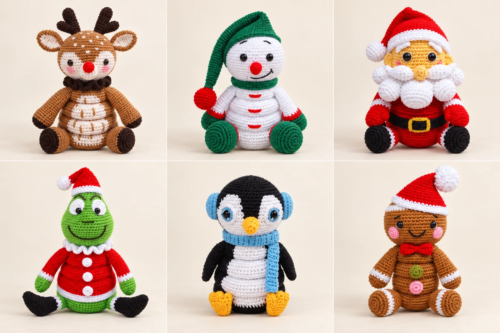
01
PARA QUEM AMA CROCHÊ E JÁ SABE OS PONTOS BÁSICOS
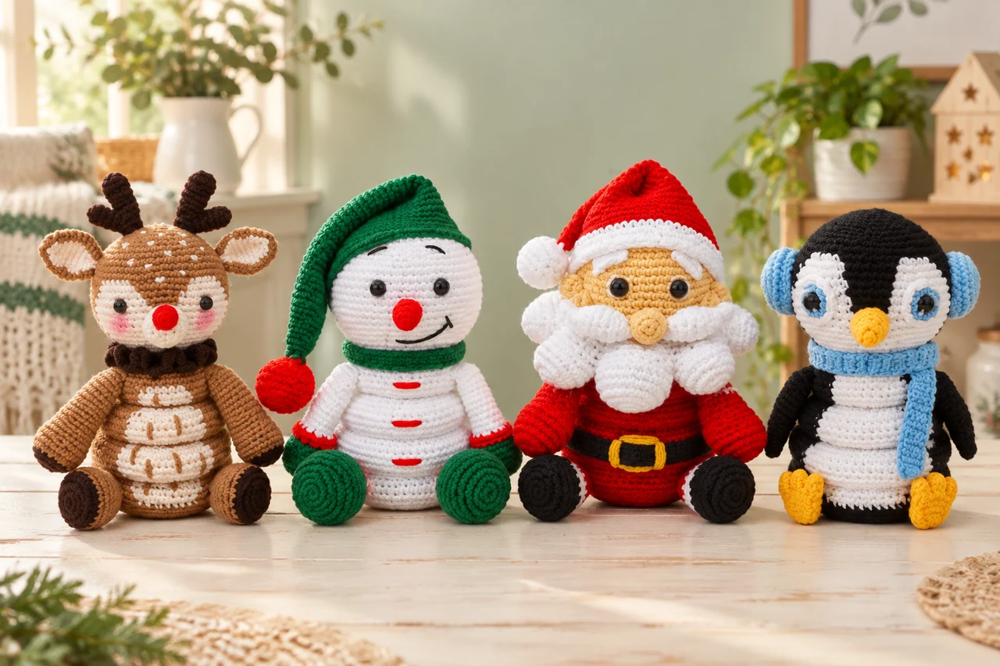
Transforme seus novelos em bichinhos que se montam e se desmontam. Uma coleção com 29 receitas em PDF para criar presentes cheios de carinho e ter orgulho de dizer: “fui eu que fiz”.
Quero fazer minhas fofuras por R$47Receitas digitais. Você confecciona as peças com seus próprios materiais.
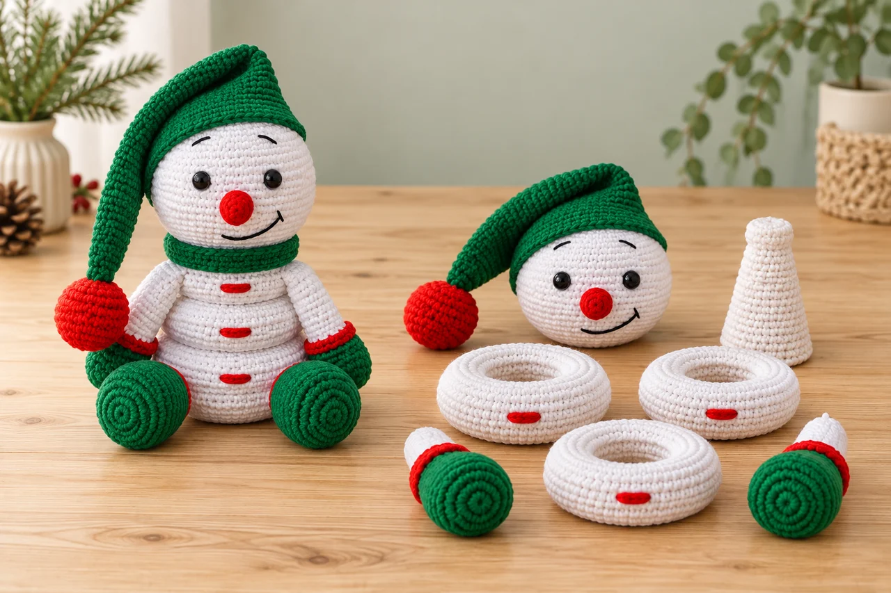
O corpinho é feito de argolas que se encaixam. Você tece cada parte e, na hora de montar, vê o personagem ganhar forma nas suas mãos.
É aquele presente que dá vontade de mostrar, desmontar e montar de novo. Feito com o seu tempo, o seu cuidado e o seu carinho.
Quero criar um presente assim →Do presente de Natal ao personagem favorito. Todos os modelos abaixo fazem parte da mesma coleção.
Seis projetos para decorar, presentear e entrar no clima da temporada.

Dezenove personagens para colecionar ou transformar em um presente especial.
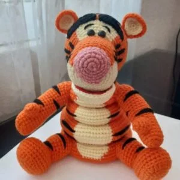
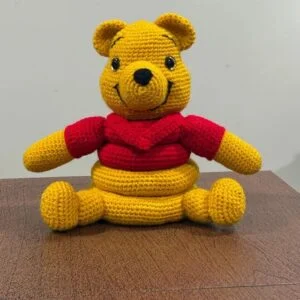
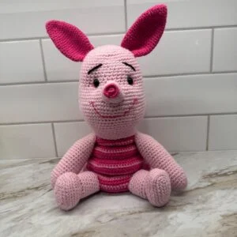
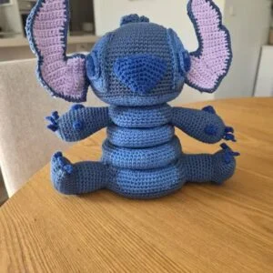
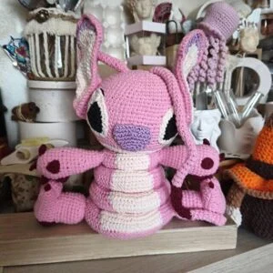
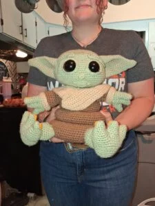
Alguns personagens nas fotos compartilhadas pelas artesãs. Confira abaixo os 19 incluídos.
Quatro modelos temáticos, com seus ovinhos de crochê, para continuar criando.
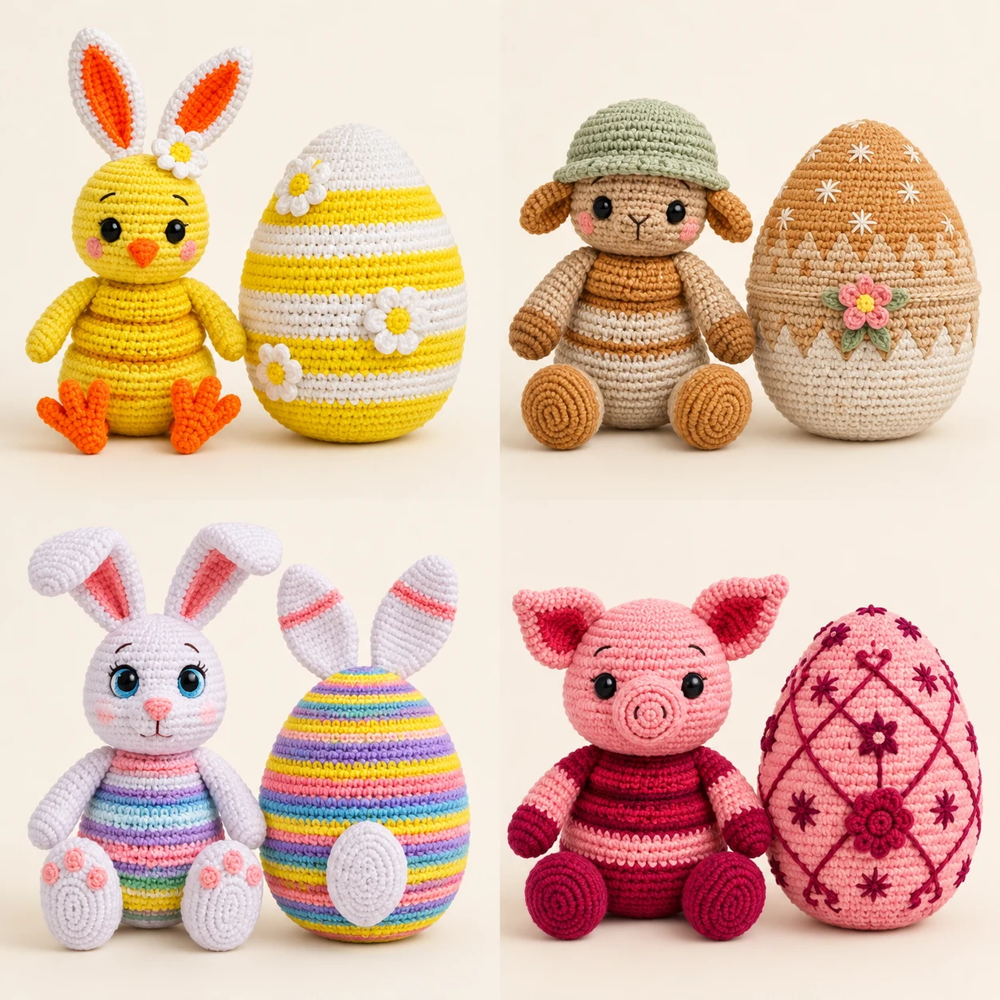
Modelos da coleção. As imagens de apresentação ilustram os projetos; cores, tamanho e acabamento variam conforme seus materiais e pontos.
Separar os fios, escolher as cores, cuidar de cada detalhe... e perceber que aquele novelo virou uma peça que você vai ter orgulho de entregar.
Receitas escritas em PDF, sem videoaulas. Indicado para quem já conhece os pontos básicos.
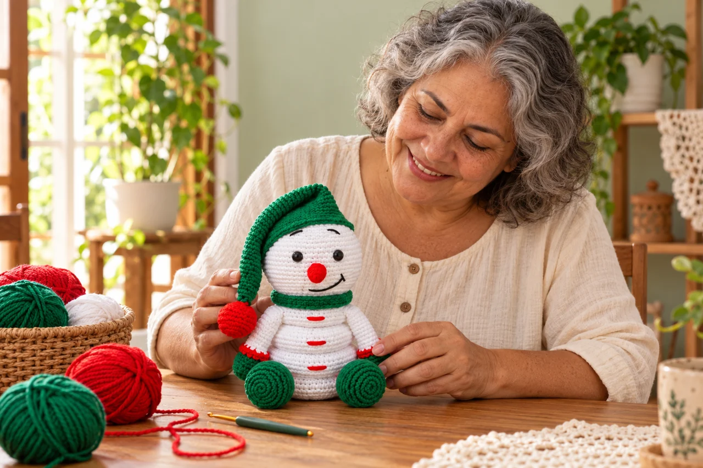
Fotos e comentários de quem já criou os modelos desta coleção. Depoimentos traduzidos para português.
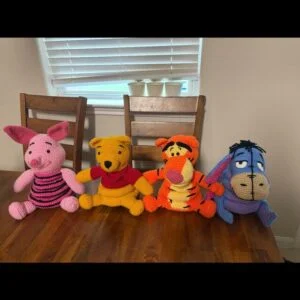
“Consegui fazer seguindo as receitas. Fáceis de acompanhar e divertidas de fazer.”Karen B.Sobre os modelos da coleção · trecho traduzido
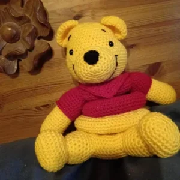
“Instruções muito boas. Ficou lindo!”Carol D.Sobre os modelos da coleção · comentário traduzido
“As instruções eram bem detalhadas e fáceis de acompanhar. As fotos do passo a passo ajudaram muito.”Mindy H.Sobre os modelos da coleção · comentário traduzido
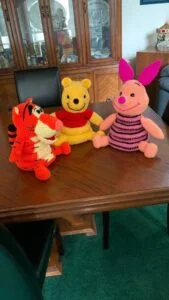
“Os meus estão prontos para as próximas feiras! Fiz em um tamanho maior e adorei o resultado!”Marisa F.Sobre os modelos da coleção · comentário traduzido
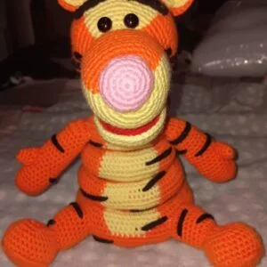
“Depois de terminar o Pooh, terminei o Tigrão e não poderia estar mais satisfeita com a compra.”Karen L.Sobre os modelos da coleção · trecho traduzido
Um projeto de cada vez.
Uma fofura depois da outra.
A coleção completa por
R$47,00
Pagamento único. Sem mensalidade.
Checkout em preparação. Compra ainda indisponível.
Produto digital. Não inclui bichinhos prontos, fios ou agulhas.
Você recebe receitas digitais para confeccionar as peças com os seus próprios materiais. Não é um kit físico.
Sim. A proposta é para quem conhece os pontos básicos e consegue acompanhar uma receita escrita. As fotos ajudam a visualizar as etapas.
Não. A coleção é composta por receitas em PDF com instruções escritas e fotos de apoio.
Sim. Você pode consultar os PDFs no celular, tablet ou computador e também imprimir para acompanhar enquanto tece.
A versão brasileira em português está em preparação, com adaptação dos termos e das instruções das receitas. A compra será liberada quando a entrega estiver pronta.
As imagens de apresentação são novas composições ilustrativas geradas com IA com base nos modelos. As fotos das avaliações foram compartilhadas pelas artesãs que fizeram os modelos. Fio, agulha, tensão dos pontos e acabamento mudam o resultado final.
Os comentários e as fotos são de artesãs que fizeram os modelos desta coleção a partir das receitas originais. Os depoimentos foram traduzidos e não avaliam a adaptação brasileira que está em preparação.